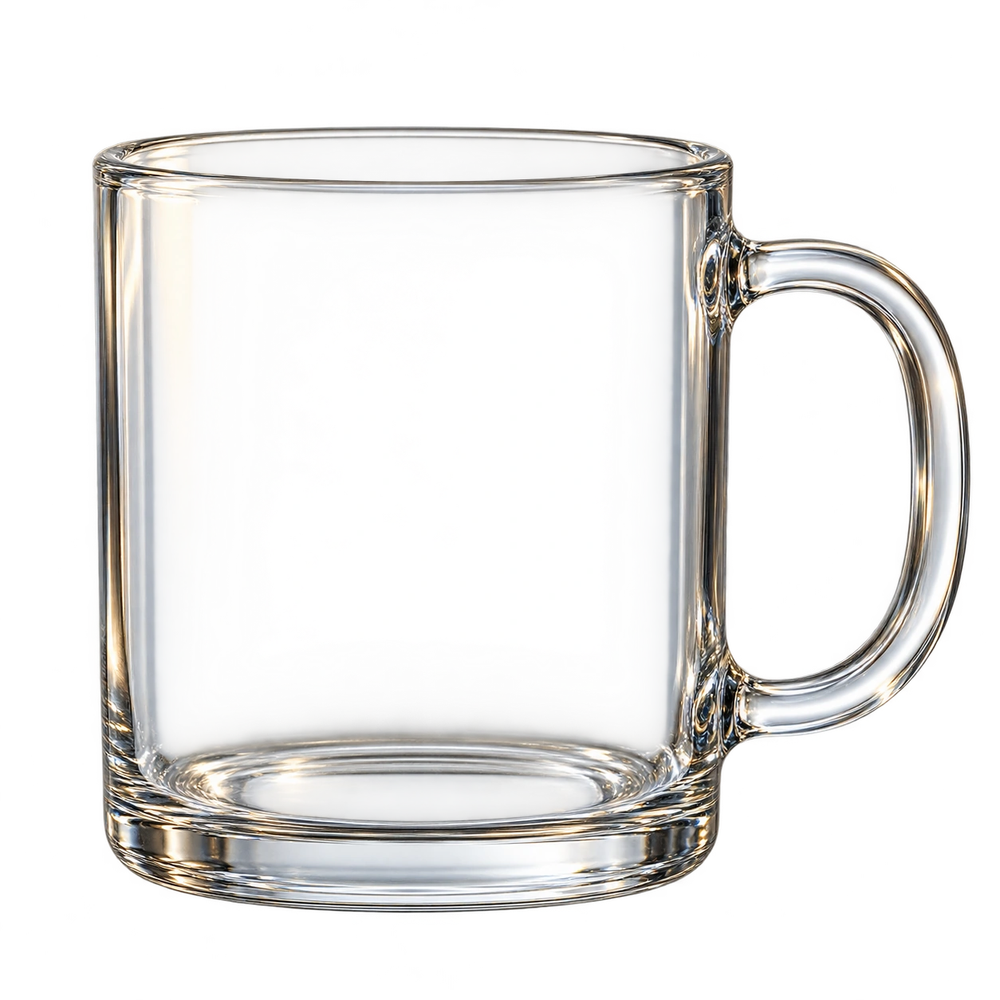
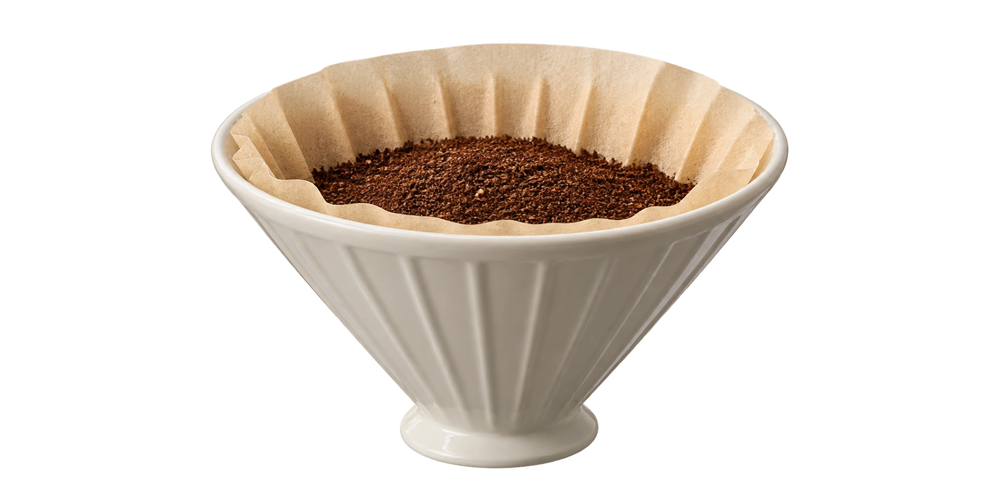

从材料，到液体 / A SMALL TRANSFER
从粉体，到液体萃取示意
透明观察杯看清液位的变化


水接触粉体咖啡来源溶解物清水粉体
- 1浸润
- 2溶出
- 3滤开
3克 · 咖啡来源溶解物始终不变
01 / 浸润水先走近，
水先走近，
再带走一部分。
水接触咖啡粉，部分可溶物进入液体。粉体仍然留在原处。
粉渣已经移开再加一点水，
再加一点水，
什么没有变？
%杯中溶解物的质量分数
- 饮品总质量
- 克
- 咖啡来源溶解物
- 克 · 不变
溶解物仍是 3 克。加入清水后，它分布在更多液体里。
拖动比较不同加水量；向回拖动表示重设情形。
设定：滤净的 200 克饮品含 3 克咖啡来源可溶物。清水不额外带入这类物质，忽略蒸发、洒出与反应。